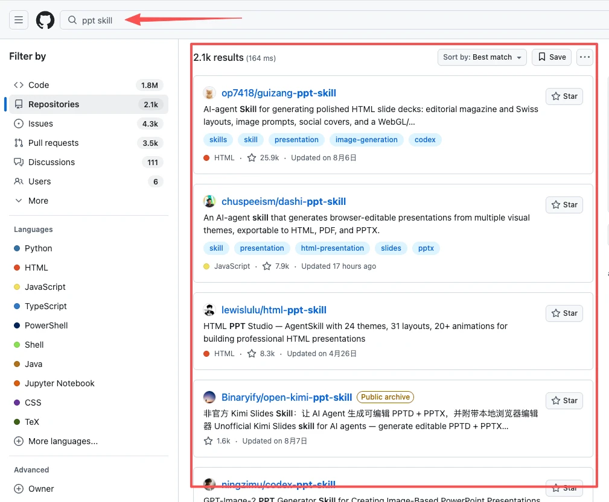
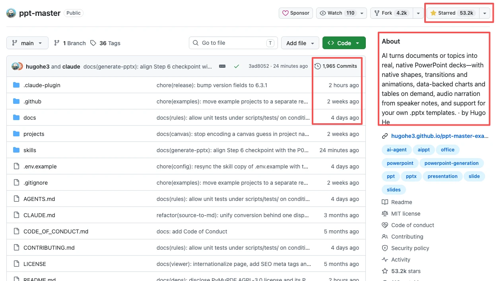
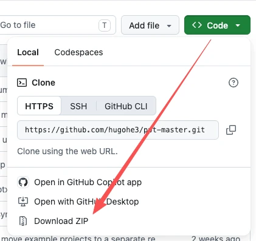

第一部分｜用 MD 组织与保存文字
01｜MD 的价值
Markdown（简称 MD）：让你和 AI 用同一种格式整理文字
- AI 读写最顺手的格式：想把 AI 写出的内容存下来、下次继续加工，可以先用 MD。它以文字和简单符号组织内容，是 AI 读写文件时常用的格式。
- 处理更快，token 更省：MD 用符号标出结构，少了 PDF、PPT 中的复杂排版。处理同样的正文时，通常能减少 token（模型处理文字的单位）消耗，也更省时。
参考：普通人最该补的4门AI工具：MD、HTML、GitHub、Skill。
02｜MD 的结构
MD 的做法很简单：用几个符号告诉 AI，哪里是标题、哪里是列表，省去辨认复杂排版的工夫。
符号长什么样
- # 是标题：在行首加 # 就是标题；## 是下一级，### 再低一级。
- - 是列表：在条目前加短横线，把并列内容列出来。
- | 是表格：用竖线分隔表格中的各列。
- 两侧各用两个星号包住的文字加粗：正文里最常用的强调方式。
为什么 AI 读起来省力
同一份资料，放在 PDF 或 PPT 里，正文可能夹着页码、分栏和装饰。AI 要先分清哪些是内容、哪些是排版。MD 把结构直接写在文字里，AI 就更容易找到正文，接着重排或加工。
同一份文字，结构越清楚，AI越容易找到该读的内容。
参考：普通人最该补的4门AI工具：MD、HTML、GitHub、Skill。
03｜使用 MD 工具
已经有 .md 文件，用 MarkText 打开；资料还在其他格式里，用 Docling 转成 MD。
- MarkText：免费开源的 Markdown 阅读器，让你像读普通文档一样打开 .md 文件。
- Docling Skill：免费开源，可把 PDF、Word、PPT、Excel、HTML、图片和扫描文档转成 Markdown。转换后检查文字和结构，再交给 AI 处理。
参考：MarkText、Docling、普通人最该补的4门AI工具：MD、HTML、GitHub、Skill。
第二部分｜用 Skill 复用成熟的工作方法
04｜Skill 的价值
Skill：把已经跑通的方法留给下一次任务
问题
资料存好了，写周报时却还要反复交代：看哪些内容、按什么格式写、最后检查什么。同类任务一多，这些要求就会一遍遍重讲。
写进 Skill 之后
把周报的写作要求整理成 Skill，也就是 AI 可以复用的技能说明。下次提供本周资料和任务，AI 就能沿用其中的步骤与标准，不必从头教一遍。
参考：普通人最该补的4门AI工具：MD、HTML、GitHub、Skill。
05｜Skill 的结构
Skill 的标准架构
一个 Skill 就是装着工作方法的文件夹。必备的是 SKILL.md，其余材料按任务需要添加。
Skill像一个工具箱：说明书必备，脚本、参考资料和样板按需配齐。 - SKILL.md（必须）：技能说明书。开头的元数据 name、description 相当于名称和简介，帮助 AI 判断要不要用；正文写清步骤、交付物和检查方法。 - scripts/（可选）：放可执行代码，把固定操作写成能直接运行的脚本。 - references/（可选）：放参考文档，供 AI 查阅这类任务需要的背景、规范和清单。 - assets/（可选）：放资源文件，例如可以直接沿用的样板。
SKILL.md 长什么样
读 SKILL.md，先看它适不适用，再看具体怎么做。
SKILL.md的开头帮助AI判断是否适用，正文再说明具体怎样做。 SKILL.md 分两段：开头用 name 和 description 说明“我是谁、什么时候用我”；后面的正文写目标、步骤和示例，告诉 AI “这项工作怎么完成”。
06｜按需加载
Skill 可以按需读取，不必每次把所有说明都交给 AI。
三层按需加载
- 启动时，只读名称和描述：先看每个 Skill 的简短介绍，判断有哪些技能可用。
- 判断相关时，加载完整说明：当前任务用得上某个 Skill，才读取它的完整 SKILL.md。
- 执行需要时，才查具体材料：做到某一步，需要参考资料或脚本时，再读取对应文件。
这就像查图书馆：先看目录，找到相关书，再翻到需要的章节。你可以准备多种工作方法，又不必把全部说明一直塞进 AI 的短期记忆。
07｜使用热门的 Skill
先用成熟的 Skill，摸清它解决什么问题。
- 找：明确需求，让 AI 去 GitHub 帮你找。 - 提示词：去 GitHub 寻找 Skill，Skill 用于【你的使用场景】。优先寻找高 Star、近两个月有维护提交的热门活跃项目。找 3–5 个，每个给出一句话特点让我快速了解。
- 用：选定一个 Skill，让 AI 帮你安装。使用时，AI 可以根据任务匹配调用，你也可以直接指定名称。
- 改：用了几次之后，把不符合习惯、表达方式或交付标准的地方告诉 AI，一起调整 Skill。
参考：普通人最该补的4门AI工具：MD、HTML、GitHub、Skill、模块五_课2_WorkBuddy入门（Skill 节）。
08｜制作自己的 Skill
把自己的重复工作沉淀成 Skill。
四步
- 先选一件经常重复做的工作，例如周报整理。
- 与 AI 从头到尾做完一次，确认流程能跑通、结果能用。
- 把流程整理成五类信息：什么时候用、提供什么资料、按什么步骤执行、最后交付什么格式、用什么标准检查。
- 整理成 SKILL.md，再用同类任务试一遍，发现问题就调整。
适合的工作（示例）
- 日常执行与协作：会议纪要、周报整理、方案检查、资料汇总。
- 分析与决策支持：经营分析、项目复盘、招聘评估、决策简报。
参考：普通人最该补的4门AI工具：MD、HTML、GitHub、Skill。
第三部分｜用 GitHub 查找与获取资源
09｜GitHub 的价值
GitHub：全网最慷慨的地方
能找到什么
刚才用到的工具和 Skill，很多都能在 GitHub 找到。这里也有 AI 提示词、Agent 项目、教程和资源合集。
可以理解成三个东西的结合体
- 程序员的作品集：公开项目展示了作者的作品，也方便你查看和获取。
- 开源项目的资料库：工具、资料、技能包都公开在这里。
- 技术世界的趋势榜单：Star 星标反映关注度，能帮你发现大家正在关注哪些项目。
参考：GitHub、普通人最该补的4门AI工具：MD、HTML、GitHub、Skill。
10｜逛 GitHub
找资源有两条路：自己搜关键词，或让 AI 带着需求帮你搜。
- 进 GitHub 搜：打开 GitHub，输入与任务相关的关键词，再查看搜索结果。
- 让 AI 搜：在对话框里说清要解决什么问题，让 AI 查找并整理候选项目。

参考：普通人最该补的4门AI工具：MD、HTML、GitHub、Skill。
11｜看懂项目
先看 Star、提交记录和 About，初步判断项目是否值得继续了解。
- Star 星标：相当于收藏数，越高说明仓库越热门。
- Commits 提交记录：近期有提交，可以看出项目是否仍在更新。
- About 仓库说明：读一遍，快速弄清这个仓库做什么、适不适合你的需求。
三处要一起看。Star 高说明关注的人多，但你还要确认项目是否在维护、功能是否对得上需求。

参考：普通人最该补的4门AI工具：MD、HTML、GitHub、Skill。
12｜使用项目
看不懂项目说明时，可以把下载的项目交给 AI，让它帮你解释用法。
- 进仓库页面，点右上角绿色的 Code 按钮，选 Download ZIP，把项目下载下来。
- 把下载的文件丢给 AI：“读懂这个项目，教我怎么用。”

参考：普通人最该补的4门AI工具：MD、HTML、GitHub、Skill。
第四部分｜用 HTML 把文字做成页面
13｜HTML 的价值
HTML：文字变作品的魔法
一段文字缺什么
现在你有了资料和方法，也能找到资源。可如果成果只留在对话里，同事或客户还得从长段文字中找重点。想让内容更方便展示和使用，就可以把它做成页面。
变成作品之后
- 能展示：产品落地页（产品介绍页）、数据看板、互动小工具、个人作品集。
- 能分享：发给同事或客户，对方打开看到同一个页面。
参考：普通人最该补的4门AI工具：MD、HTML、GitHub、Skill。
14｜HTML 的真相
HTML 文件可以用浏览器打开；先把页面需求说清楚，再让 AI 帮你写。
描述页面的文字文件
HTML 描述页面上有哪些文字、图片、按钮和表格。配合文件里的样式和脚本，还能安排外观、点击反应、计算和动态变化。浏览器读这些内容，呈现出你能看、能用的页面。
打开就能用
电脑里现成的浏览器就能打开 HTML 文件。你可以让 AI 按要求生成并保存文件，再用浏览器检查文字、排版和按钮是否符合预期。
同一份描述，经过浏览器呈现，就变成能看、能点的页面。
参考：普通人最该补的4门AI工具：MD、HTML、GitHub、Skill。
15｜Skill 推荐
从零到好看，每一步都有现成的 Skill 可用。
三个 Skill，三种选择
- UI UX Pro Max｜重量级，从零搭建：一套完整的网页设计工具箱，包含配色、字体、布局、图表和交互规则，适合从零制作网页。
- Impeccable｜用来精修：网页精修 Skill，改善排版、配色、动效和使用体验，适合把「能用」提升到「好用、好看」。
- Design Taste Frontend｜轻量级，审美纠偏：轻量化的网页审美纠偏 Skill，减少 AI 生成网页常见的模板感和廉价感，适合落地页、作品集或快速改造现有网页。
参考：UI UX Pro Max、Impeccable、Design Taste Frontend、普通人最该补的4门AI工具：MD、HTML、GitHub、Skill。
小结
- MD 管组织与保存：用简单符号把文字存得清楚，便于 AI 继续加工。
- Skill 管复用：把跑通的工作方法保存下来，同类任务不必从头教。
- GitHub 管资源：查找公开的工具、资料和技能包，再判断是否适用。
- HTML 管展示：AI 的输出变成能打开、能分享、能用的页面。
试着用 MD 保存一份周报，把写法整理成 Skill；需要工具时去 GitHub 找，想展示成果时再做成 HTML 页面。四件套就这样接上了。